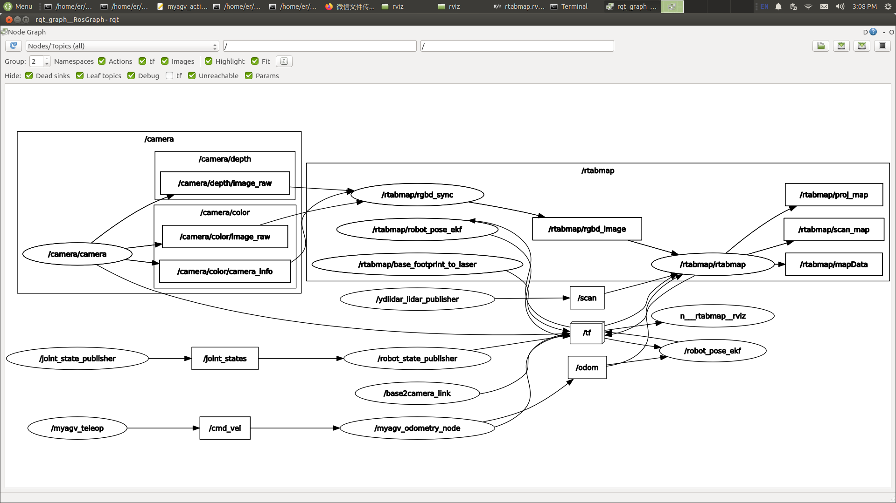
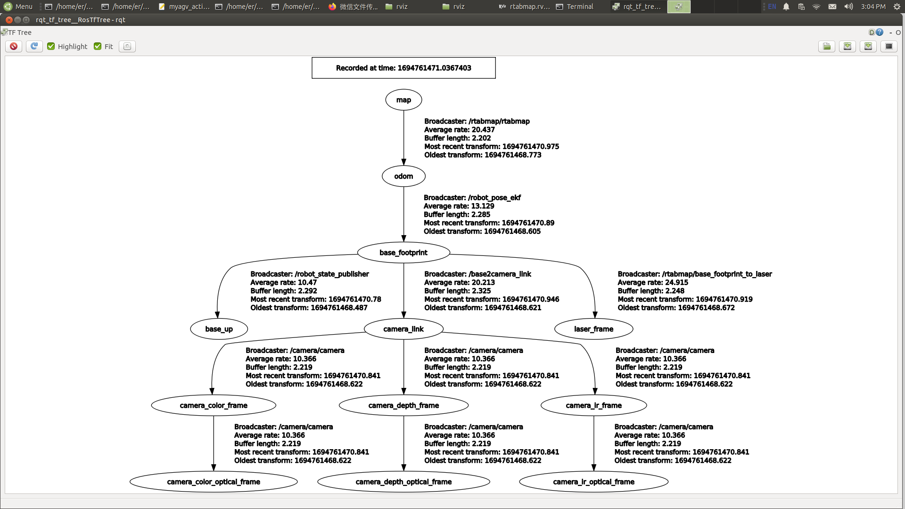

使用常见的 ROS 工具
- 启动文件
ROS 中的启动文件是同时启动多个节点的一种手段。它还能自动启动 ROS 主节点管理器，并方便对每个节点进行各种配置，为多个节点的运行提供极大的便利。
（1）<launch> 标签
<launch> 标签就像一个大括号，定义了一个特定区域。所有启动文件都以 <launch> 开始，以 </launch> 结束。所有描述性标记必须写在 <launch> 和 </launch> 之间。
<launch>
……
……
</launch>
（2）<node> 标签
在启动文件中， <node> 标签是最常见的标签之一。每个<node>标签都包含 ROS 图中节点名称（name）、节点所在软件包（pkg）和节点类型（type）的属性。常用格式如下：
<node pkg="package-name" type="executable-name" name="node-name" />
| 标签属性 | 属性功能 |
|---|---|
| name="NODE_NAME" | 为节点指定名称，覆盖由 ros::init() 定义的 node_name 名称 |
| pkg="PACKAGE_NAME | 包含节点的软件包名称 |
| type="FILE_NAME" | 节点的可执行文件名 |
| output="screen" | 向终端屏幕输出节点的标准输出；默认为日志文件 |
| respawn="true" | 设置为 true 时，节点会在终止时自动重启；默认为 false |
| ns = "NAME_SPACE" | 命名空间，为节点内的相对名称添加命名空间前缀 |
| args="arguments" | 节点所需的输入参数 |
（3）<include> 标签
该标签允许在当前文件中加入另一个 roslaunch XML 文件。
| 标签属性 | 属性功能 |
|---|---|
| file ="$(find pkg-name)/path/filename.xml" | 指定要包含的文件 |
e.g.
<include file="$(find demo)/launch/demo.launch" />
（4）<remap> 标签
顾名思义，<remap> 标签用于重新映射。ROS 支持主题的重新映射，<remap> 标签包括original-name和new-name，分别代表原名和新名。
例如，假设您有一个订阅"/chatter"主题的节点，但您自己的节点只能发布到"/demo/chatter"主题。由于这两个主题的消息类型相同，而你又想让这些节点进行通信，你可以在启动文件中写入以下内容：
<remap from="chatter" to="demo/chatter"/>
这样就可以直接将 /chattertopic 重新映射到 /demo/chatter，从而实现两个节点之间的通信，而无需修改任何代码。
（5）<param> 标签
<param> 标签的功能与命令行中的 rosparam set 命令类似。例如，在参数服务器中添加一个值为 1.0 的名为 demo_param 的参数。
<param name="demo_param" type="int" value="1.0"/>
（6）<rosparam> 标签
<rosparam> 标签允许从 YAML 文件一次性导入大量参数。
用法如下：
<rosparam command="load" file="$(find pkg-name)/path/name.yaml"/>
（7）<arg> 标签
"Argument" 是另一个概念，类似于启动文件中的局部变量，仅限于在启动文件中使用，目的是方便重构启动文件，与 ROS 节点内的实现无关。
要设置参数，请使用
<arg name="arg-name" default= "arg-value"/>
- Rviz
rviz 是一种三维可视化工具，能很好地兼容基于 ROS 软件框架的各种机器人平台。在 rviz 中，可以使用 XML 来描述机器人、周围物体和任何物理实体的属性，包括尺寸、质量、位置、材料、关节等，并将其直观地呈现在界面中。此外，rviz 还能以图形方式显示机器人传感器数据、机器人运动状态和周围环境变化等实时信息。总之，rviz 可以帮助开发人员实现所有可监控信息的图形化显示。开发人员还可以在 rviz 的控制界面中通过按钮、滑块、数字输入等方式控制机器人的行为。 下图显示了 rviz 在绘制地图过程中以图形方式显示的网格图、三维点云图和激光数据。

- Qt Toolbox
计算图可视化工具（rqt_graph）:
rqt_graph 工具提供当前 ROS 系统中计算图的图形表示。要在运行图形构建功能时启动该工具，请使用以下命令：
rqt_graph
成功启动后，将显示计算图表，如下图所示。

TF 关系可视化工具 (rqt_tf_tree)
rqt_tf_tree 工具以图形方式显示运行节点之间的当前 TF 关系。要在运行图形构建功能时启动该工具，请使用以下命令：
rosrun rqt_tf_tree rqt_tf_tree
成功启动后，将显示 TF 关系图，如下图所示。
